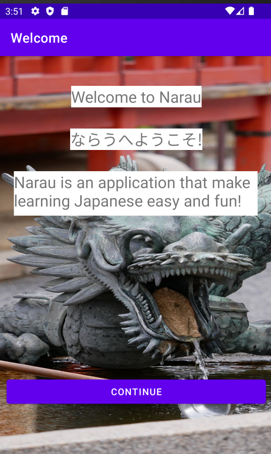
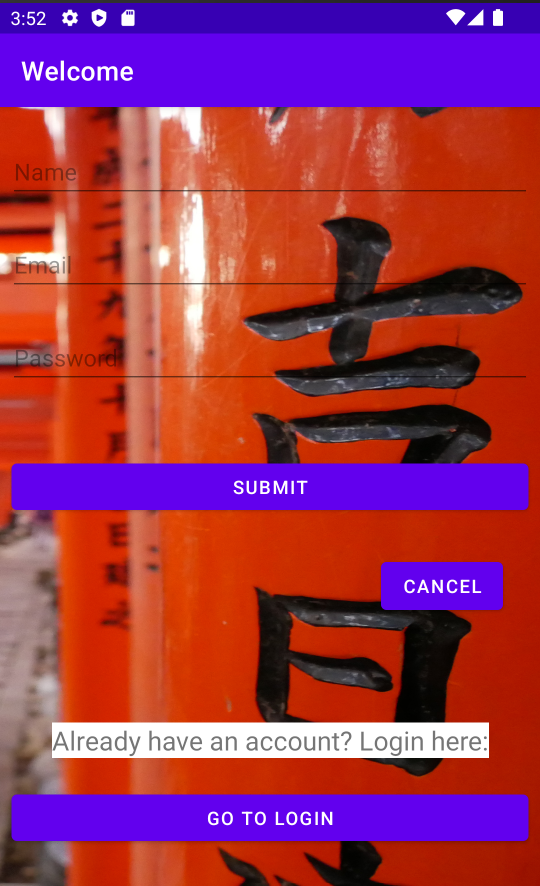
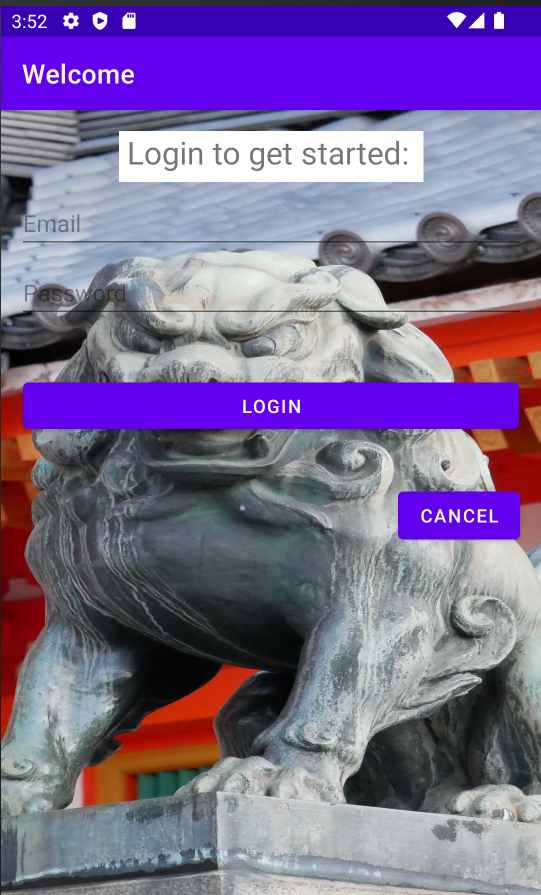
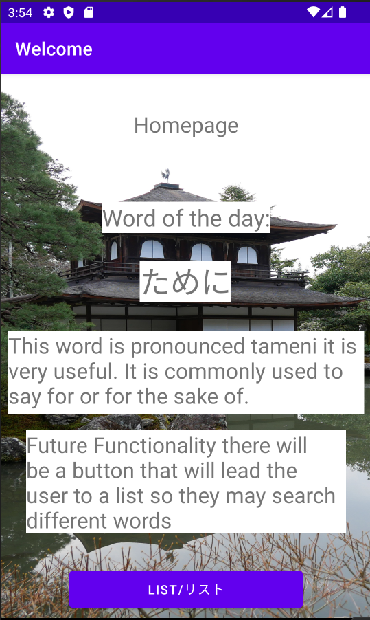

Projects
This page details segments some of the projects i'm working on:
Project Narau
Project Narau is an ambitous project to bring Japanese learning to Android! The current roadmap planned out for this application is to allow the user to login and learn japanese! The application will possess a list that will display various japanese words users can learn from, and will allow users to research japanese kanji on the app!
This is the application's github page from here future updates will be added here.
In future functionality the application will have a list of kanji the user can research kanji with.
   JpLearn
This project is a discord bot I have been working on called JpLearn, it is a bot that generates random prhases for users teaching them crucial grammar points in Japanese and links them to an appropriate website to educate themselves more on the grammar points!
This bot is built off Node JavaScript, You can check the bot out in my github page.
Activity Diagram:
The intent of the application was to teach people Japanese in a practical manner. This diagram helped in the development of this application allowing me to catagorize my requirements when creating this simple program.